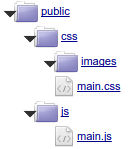

Episode 1: Présentation
I. Introduction
Rendez-vous à l'adresse http://mkframework.com, dans le menu de droite, il y a une catégorie Télécharger.Cliquez sur le lien "Framework & Plus"
Il y a plusieurs moyens de télécharger le framework:
- En téléchargeant l'archive zip,
- via subversion (svn),
- via github
- ou via composer.
Dans ce tutoriel, on choisira de télécharger la dernière archive zip.
II. Installation
Copiez l'archive téléchargée dans votre répertoire web.Désarchivez celle-ci.
Ouvrez votre navigateur à l'adresse http://localhost
Vous voyez votre répertoire désarchivé, cliquez dessus.
Si vous cliquez sur le nom "Builder", vous afficherez le générateur Web.
III. Parenthèse sur l'archive téléchargée
Ce que vous venez de télécharger est l'ensemble :- Builder : générateur Web
- Lib/mkframeworkLib/ : la librairie du framework
- Projects/ : un repertoire qui contiendra vos futurs sites Web
Sur d'autres frameworks, vous utilisez un script en ligne de commande pour créer une application, générer la couche modèle, les modules CRUD...
Ici tout se fait en web, vous utilisez des formulaires pour sélectionner, renseigner et générer le code désiré.
IV. Découverte rapide du builder
La parenthèse fermée, quand vous ouvrez votre navigateur à l'adresse du builder, vous voyez une page comportant deux onglets.Si vous avez le même message rouge (sous GNU/Linux et MacOsx) modifiez les droits d'écriture du répertoire Projects/ (pour qu'il soit inscriptible par le builder)

En réactualisant vous devriez voir le message rouge disparaître.
V. Créons une application
Nous commençons par créer une application vide.On entre "monApplication" puis on valide.
Le builder vous redirige automatiquement sur le second onglet listant les projets (et permettant de les administrer).
Vous avez trois boutons :
V.1. Voir le site, pour pouvoir voir celui-ci
V.2. Explorer le projet
Vous permet de naviguer au sein de votre projet avec de plus une documentation contextuelle.
V.3. Editer le projet

Voila la liste des actions disponible, qui sont habituellement executées via la ligne de commande sur les autres frameworks.
VI. Présentation de l'arborescence
Dans le mot framework il y a "cadre", quand on génère une application, elle a une arborescence précise.
Avec cette arborescence connue, une personne connaissant le framework s'y retrouvera car il connaitra celle-ci.
VI.1 Le répertoire "conf"
Contient les différents fichiers de configuration.VI.2 Le répertoire "layout"
Contient les templates de votre site.VI.3 Le répertoire "module"
Contient les modules (couple controller + vues) de votre site
VI.4 Le répertoire "plugin"
Contient vos plugins.VI.5 Le répertoire "public"
Webroot ou racine web de votre application
Je vous invite à vous rendre à l'adresse configuration pour voir plus en détail.
VII. Fonctionnement de l'application
Sur notre application vide, on peut voir dans la barre de debug, que l'on charge le module "default" et l'action "index".
Si on va voir le module "default", et que l'on ouvre le fichier main.php
Pour information, un module contient un fichier main.php (son controlleur) ainsi qu'un répertoire "view" contenant ses vues.
class module_default extends abstract_module{
public function before(){
$this->oLayout=new _layout('template1');
}
public function _index(){
$oView=new _view('default::index');
$this->oLayout->add('main',$oView);
}
public function after(){
$this->oLayout->show();
}
}
Alors une action, c'est une "page", ici on souhaite donc afficher la page "index" de notre module "default"
Une action est une méthode publique préfixée d'un underscore.
Pour afficher notre application, le framework va d'abord appeler la méthode before() du module.
public function before(){
$this->oLayout=new _layout('template1');
}
Ensuite le framework appelle la page demandée: ici "index"
public function _index(){
$oView=new _view('default::index');
$this->oLayout->add('main',$oView);
}
Puis, à l'aide de la méthode "add" on ajoute cette vue à l'emplacement "main" du layout précédemment instancié.
Enfin le framework appelle la méthode after()
public function after(){
$this->oLayout->show();
}
VIII. Petite parenthèse sur le layout
Si on ouvre le fichier layout/template1.php
<!DOCTYPE HTML PUBLIC "-//W3C//DTD HTML 4.01 Transitional//EN" "http://www.w3.org/TR/html4/loose.dtd">
<html>
<head>
<title>monApplication</title>
<link rel="stylesheet" type="text/css" href="css/main.css" media="screen" />
<script src="js/main.js" type="text/javascript"></script>
<link rel="alternate" type="application/rss+xml" title="RSS" href="<?php echo _root::getLink('article::newsrss') ?>"/>
<meta http-equiv="Content-Type" content="text/html; charset=utf-8"/>
</head>
<body>
<div class="main">
<div class="menu"><?php echo $this->load('menu') ?></div>
<div class="content">
<?php echo $this->load('main') ?>
</div>
</div>
</body>
</html>
<div class="menu"><?php echo $this->load('menu') ?></div>
<div class="content">
<?php echo $this->load('main') ?>
</div>
Le fameux "main" où on ajoutait précédemment la vue "default::index"
IX. Schéma de rappel du fonctionnement
Pour rappel, le schéma de fonctionnement